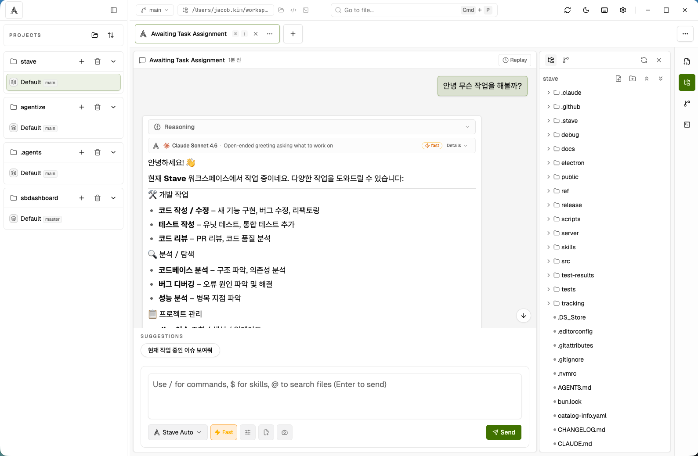

Controlled agent execution
See approval requests, plan proposals, and tool traces inside each session. Intervene only when you need to.
Task-based sessions, approval-gated execution, inline diff review, and session replay — all in a single desktop app built for repeatable AI-driven development.

What is Stave
Stave doesn't split your editor and your agent into separate windows. Execution, approval, change review, and session replay all live in one continuous loop.
See approval requests, plan proposals, and tool traces inside each session. Intervene only when you need to.
Task tabs and worktree flows let you run experiments, implementations, and reviews in parallel.
Replay request/response snapshots from recent turns to quickly trace what went right or wrong.
How it works
Isolate each unit of work as a task. Attach files, images, or any context the agent needs.
Pick a model and permission policy, then execute. Track approval requests and plan events in real time.
Open changes inline in the built-in editor. Add follow-up instructions to refine the output.
Re-watch turn snapshots to understand decisions, then kick off the next task seamlessly.
Core features
Run Claude and Codex in the same project context. Switch models per task without losing state.
Gate agent actions behind explicit approvals. Review execution plans before they run.
Step through recent turns to replay request/response pairs and trace issues fast.
Isolate branches into separate workspaces. Run parallel implementations and compare side by side.
Chat, code, and run commands without switching windows. Everything docks into one layout.
SQLite-backed storage keeps session state and work history on your machine. No cloud dependency.
Check out the install guide, browse releases, or read the source.